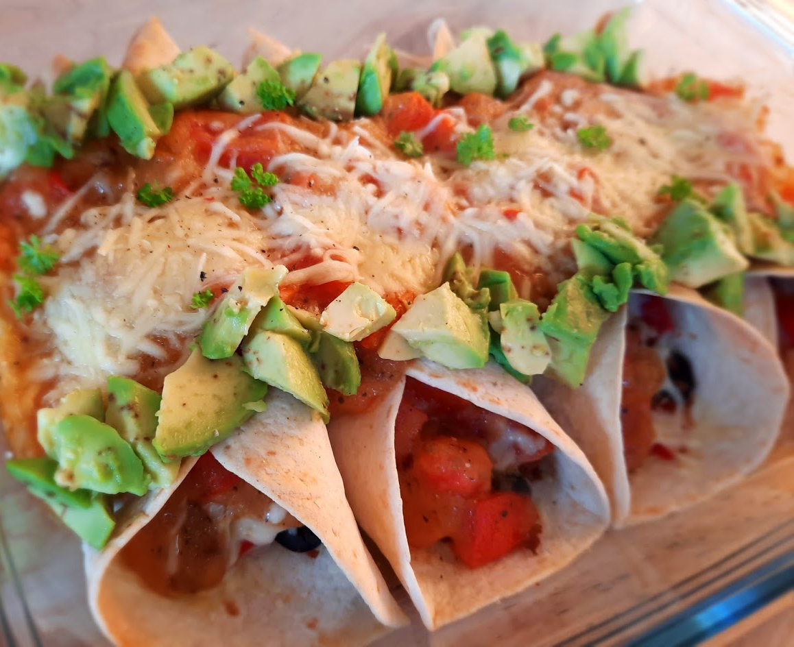

bami met spinazie

japanse beef teriyaki

chili sin carne met guacamole

avocado salade

amerikaanse caesar salade

italiaanse caponata

koreaanse bibimbap

coq au vin
gnocchi

mexicaanse huevos rancheros

chorizosoep

arabische falafel

spaanse paella

cottage pie

kip in de hoed

sri lankaanse kottu

enchiladas
Dit gerecht is makkelijk veganistisch te maken! Je hoeft alleen maar de kaas te vervangen door een veganistische variant.

Bereidingsduur: 40 minuten
Aantal personen: 4
Ingrediënten:
8 volkoren tortilla wraps
175 gram vegetarisch gehakt
1 paprika
1 ui
3 tomaten
150 gram champignons
20 olijven
2 stuks avocado
enkele takjes peterselie
200 gram geraspte kaas
35 gram bloem
70 milliliter olijfolie
1 eetlepel chilipoeder
1 theelepel knoflookpoeder
1 theelepel komijn
1 eetlepel bruine suiker
1 eetlepel oregano
naar smaak zwarte peper
8 volkoren tortilla wraps
175 gram vegetarisch gehakt
1 paprika
1 ui
3 tomaten
150 gram champignons
20 olijven
2 stuks avocado
enkele takjes peterselie
200 gram geraspte kaas
35 gram bloem
70 milliliter olijfolie
1 eetlepel chilipoeder
1 theelepel knoflookpoeder
1 theelepel komijn
1 eetlepel bruine suiker
1 eetlepel oregano
naar smaak zwarte peper
Instructies:
1. Snijd alle groenten klein en fruit de ui. Voeg vervolgens het gehakt toe en bak kort. Voeg daarna de paprika, champignons en olijven toe en roer kort om.
2. Verhit de olijfolie in een ander pannetje en voeg de bloem toe, roer tot het goed gemengd is. Voeg dan de tomaten, het chilipoeder, knoflookpoeder, komijnpoeder, bruine suiker, oregano, zwarte peper naar smaak en een kopje water toe en roer goed door. Laat dit even pruttelen tot de saus de gewenste dikte heeft.
3. Verwarm de oven voor op 180 graden. Neem een wrap en vul deze met wat gehaktmengsel, geraspte kaas en de saus. Leg deze in een ingevette ovenschaal en vul dan de andere wraps en voeg ook deze toe aan de ovenschaal. Strooi de rest van de saus en wat geraspte kaas over de wraps. Zet dan 20 minuten in de oven.
4. Snijd ondertussen de peterselie fijn. Wanneer de enchiladas klaar zijn, leg je de avocadostukjes en erop en bestrooi je ze met de peterselie. Dit recept is genoeg voor 8 enchiladas.
1. Snijd alle groenten klein en fruit de ui. Voeg vervolgens het gehakt toe en bak kort. Voeg daarna de paprika, champignons en olijven toe en roer kort om.
2. Verhit de olijfolie in een ander pannetje en voeg de bloem toe, roer tot het goed gemengd is. Voeg dan de tomaten, het chilipoeder, knoflookpoeder, komijnpoeder, bruine suiker, oregano, zwarte peper naar smaak en een kopje water toe en roer goed door. Laat dit even pruttelen tot de saus de gewenste dikte heeft.
3. Verwarm de oven voor op 180 graden. Neem een wrap en vul deze met wat gehaktmengsel, geraspte kaas en de saus. Leg deze in een ingevette ovenschaal en vul dan de andere wraps en voeg ook deze toe aan de ovenschaal. Strooi de rest van de saus en wat geraspte kaas over de wraps. Zet dan 20 minuten in de oven.
4. Snijd ondertussen de peterselie fijn. Wanneer de enchiladas klaar zijn, leg je de avocadostukjes en erop en bestrooi je ze met de peterselie. Dit recept is genoeg voor 8 enchiladas.